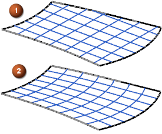

自由曲面构造结果
自由曲面构造结果位于建模首选项对话框的自由曲面选项卡中，它将控制为下列自由曲面特征创建修剪的平面还是 B 曲面：
-
通过曲线组
-
通过曲线网格
-
扫掠
-
直纹
如果选择的是平面选项，并且输入几何体产生平的曲面，则会创建一个修剪的平面。如果选择的是 B 曲面，则总是创建 B 曲面。
使用有界平面代替 B 曲面可提高下游应用模块的性能和可靠性。但是，如果等参数曲线或曲面对您的应用很重要，则 B 曲面可提供对曲面的等参数曲线或流线数据的控制。
在下面的示例中，使用相同的共面曲线创建了两个通过曲线网格曲面，它将演示两个选项对等参直线的影响。
|
|
 |